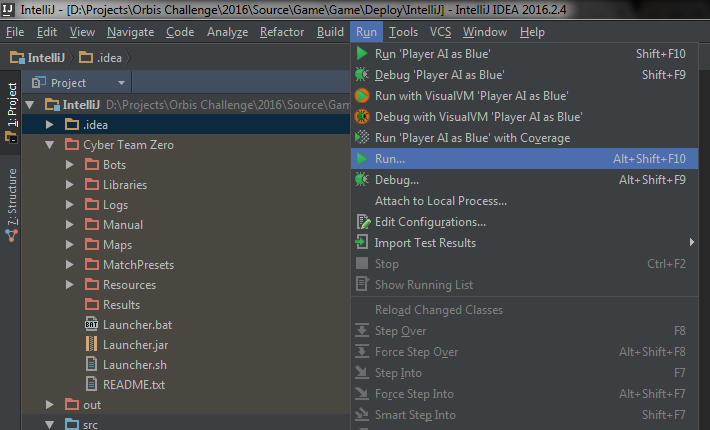
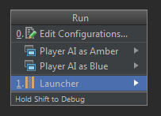
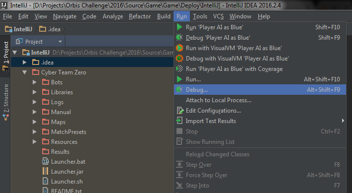
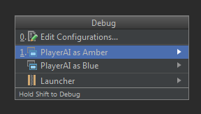
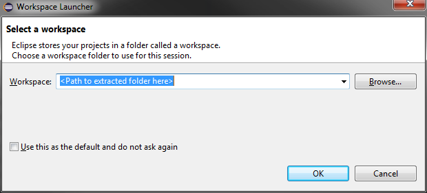
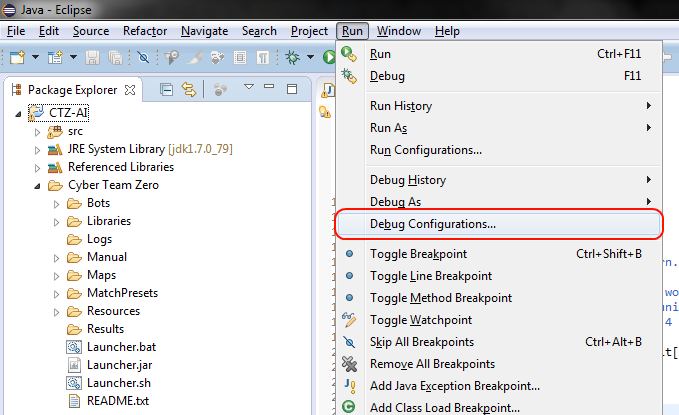
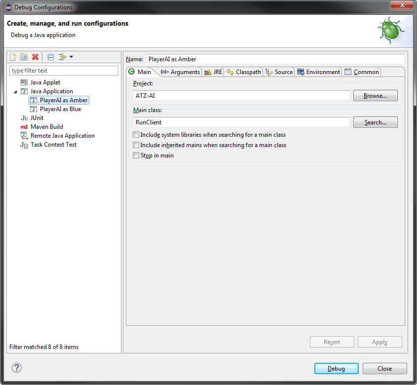

Configuring your IDE¶
We have provided pre-made projects for 3 IDEs: IntelliJ, Eclipse, and PyCharm. The benefits of using an IDE include inline documentation, autocompletion of functions, and breakpoints/step-through debugging.
Warning
Due to varying environment setups on different platforms, the run configurations in our premade projects may not work in your environment. Unfortunately, due to time restrictions we may not be able to provide support for every IDE. If you encounter issues, please check your IDE’s help pages first.
If you want to set up your IDE yourself, see Other IDEs.
IntelliJ¶
TL;DR
Open the starter kit as a project.
Run the launcher from the .bat or .sh file, or from the included Run Configuration.
Select “Start with IDE” on one team.
Run your AI from the Debug Configuration corresponding to the team you selected.
Setup¶
- Download the IntelliJ starter kit
- Extract the contents to a folder of your choice
- Start IntelliJ and open the project. You should select the folder you extracted to in Step 2.
Warning
IntelliJ may show a prompt saying the Project SDK is not setup. You will have to follow the prompts and select your JDK.
Running and debugging a game¶
First, start the Launcher. You can start it once, and leave it open between games. You can start the Launcher from the shell script in the Cyber Team Zero folder, or from IntelliJ by selecting Run > Run... > Launcher
 Now you can start running games to debug and test your AI.
Select “Start with IDE” for one of the teams.
Configure the other settings how you like. If you’d like your AI to combat itself simply browse to its source file in the other team.
When you are ready to run a game, click “Start” in the Launcher. The Launcher will now wait for you to start your AI from your IDE.
Go back to IntelliJ, select Run > Debug...
Select ‘PlayerAI as Amber’ (Or ‘as Blue’). In subsequent runs you can click the little Debug icon in your toolbar.

The game will now start! You can put breakpoints in your code as you wish. Keep in mind that you do not need to close and reopen the launcher; After exiting the game, you can rerun it by starting at Step 3.
Eclipse¶
TL;DR
Open the starter kit as a workspace.
Run the launcher from the .bat or .sh file, or from the included External Tool configuration.
Select “Start with IDE” on one team.
Run your AI from the Debug Configuration corresponding to the team you selected.
Setup¶
- Download the Eclipse starter kit
- Extract the contents to a folder of your choice.
Note
The contents are an Eclipse workspace, not a project.
Start Eclipse, and set the workspace to the folder you chose in Step 2.
The CTZ-AI project will appear in the project Window.
Warning
This project was made in Eclipse 4.5.2 (Mars) and may not open correctly in older versions of Eclipse. On the other hand, if you are using a newer version of Eclipse, then you may get a warning about the workspace being from an older version and that it must be upgraded. Just like most warnings in life, you can safely ignore this, and click OK to upgrade the project.
Running and debugging a game¶
First, start the Launcher. You can start it once, and leave it open between games.
Note
You can start the launcher from within Eclipse by selecting Run > External Tools > Launcher.
Now you can start running games to debug and test your AI.
Select “Start with IDE” for one of the teams.
Configure the other settings how you like. If you’d like your AI to combat itself simply browse to its source file in the other team.
When you are ready to run a game, click “Start” in the Launcher. The Launcher will now wait for you to start your AI from your IDE.
Go back to Eclipse, select Run > Debug Configurations...
Select ‘PlayerAI as Amber’ (Or ‘as Blue’ if you ran the Launcher with Blue Debugging in Step 2.
Click “Debug” at the bottom of the dialog.
Note
In subsequent runs you can click the little Debug icon in your toolbar.
The game will now start! You can put breakpoints in your code as you wish. Keep in mind that you do not need to close and reopen the launcher; After exiting the game, you can rerun it by starting at Step 3.
PyCharm¶
TL;DR
Open the starter kit as a project.
Run the launcher from the .bat or .sh file.
Select “Start with IDE” on one team.
Run your AI from the Debug Configuration corresponding to the team you selected.
Setup¶
- Download the PyCharm starter kit
- Extract the contents to a folder of your choice
- Start PyCharm and open the project. You should select the folder you extracted to in Step 2.
Warning
PyCharm may show a prompt saying the Python Interpreter for the Project is not setup. You will have to follow the prompts and select your Python Install directory.
Running and debugging a game¶
First, start the Launcher. You can start it once, and leave it open between games.
- Select “Start with IDE” for one of the teams.
- Configure the other settings how you like. If you’d like your AI to combat itself simply browse to its source file in the other team.
- When you are ready to run a game, click “Start” in the Launcher. The Launcher will now wait for you to start your AI from your IDE.
- Go back to PyCharm, select Run > Debug...
- Select ‘PlayerAI as Amber’ (Or ‘as Blue’ if you selected the Blue team to Start with IDE in the launcher). In subsequent runs you can click the little Debug icon in your toolbar.
The game will now start! You can put breakpoints in your code as you wish. Keep in mind that you do not need to close and reopen the launcher; After exiting the game, you can rerun it by starting at Step 3.
Other IDEs¶
Create a project in your IDE, and reference the CTZ-Client.jar or copy RunPythonClient.py and the PythonClientAPI folder.
Have your IDE use RunClient as the main class (Java) or the RunPythonClient.py Script (Python). Your client launch command parameters should look like:
-c _lastconfig -u <team>
Where <team> is Amber or Blue (depending on which team you select as “Start with IDE” in the launcher)
For Java: Make sure your PlayerAI file is included in the classpath
For Python: in addition to the above command parameters, you must also pass a third one:
-cp <path to folder where PlayerAI.py is located>
Be weary of spaces in the folder path.
(Important!) Make sure your “Working Directory” is set to the folder Launcher.jar is located in.